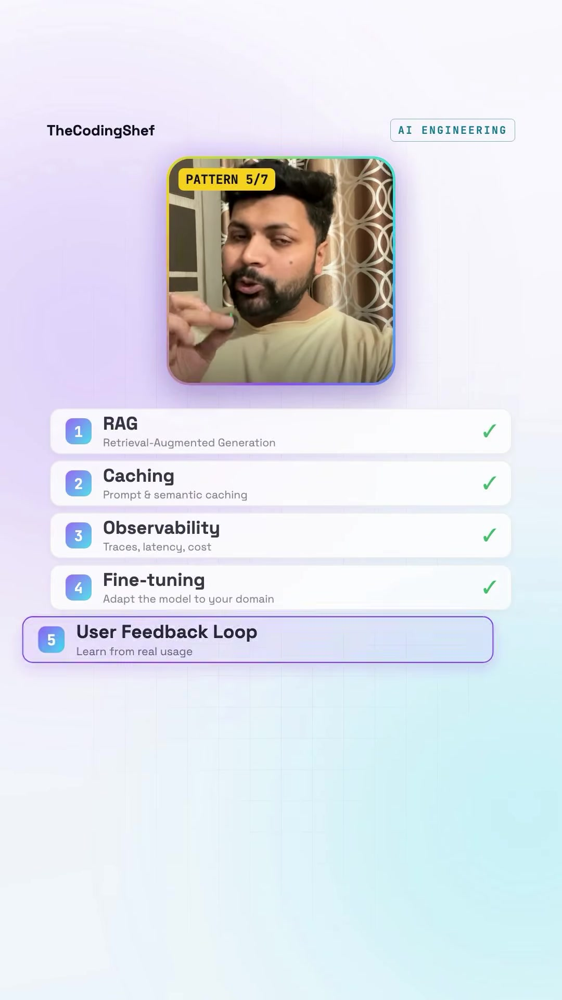
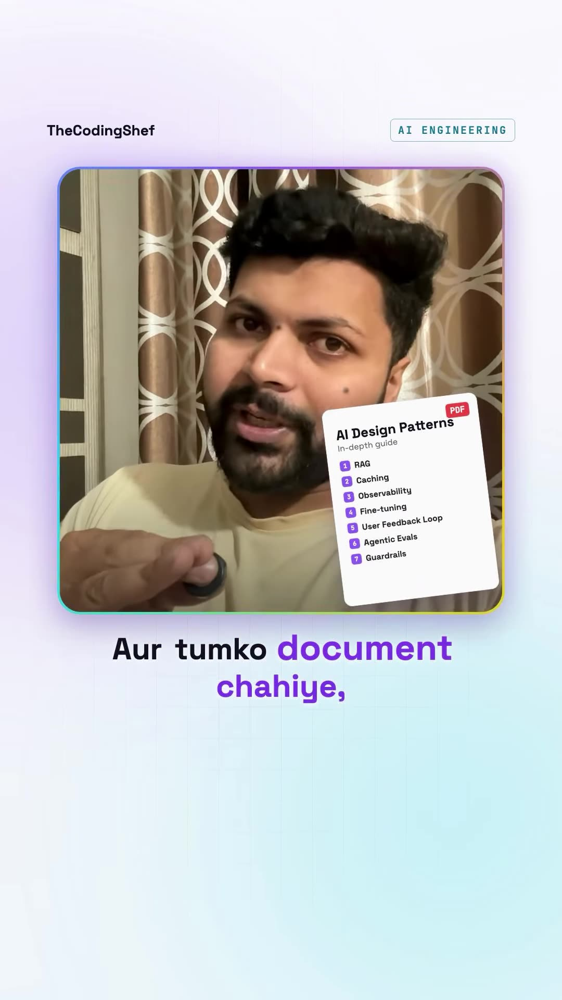
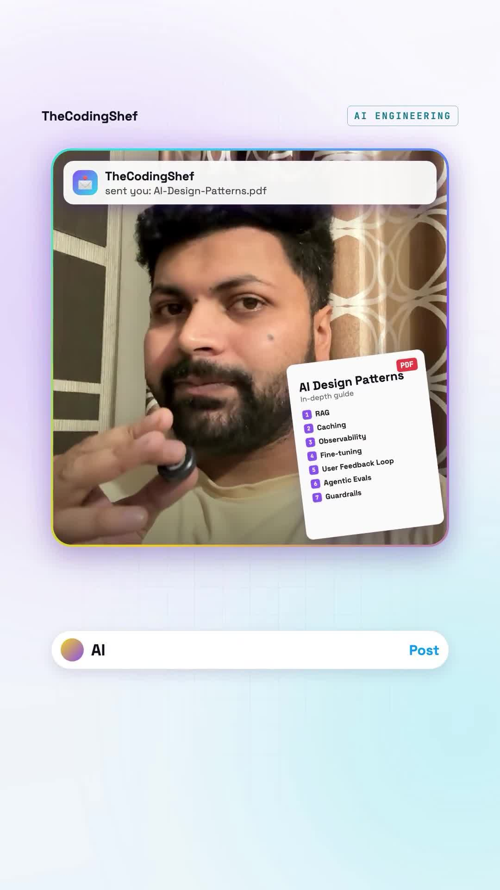

Executive Summary
As machine learning shifts from training custom foundational models to deploying LLM-powered applications, senior software engineering interviews have standardized around AI Systems Architecture. Building reliable, cost-effective, and safe generative AI applications requires moving beyond naive prompt engineering and implementing established architectural design patterns.
In this reference guide, software engineer TheCodingShef outlines the 7 core design patterns required to take prototype LLM applications into production-grade enterprise deployment.
Core Visual Demonstrations



The 7 Production AI Design Patterns
1. Retrieval-Augmented Generation (RAG)
Grounds foundation models on dynamic, proprietary external data without expensive fine-tuning. Combines semantic vector search (cosine similarity on embeddings), hybrid keyword BM25 retrieval, and reciprocal rank fusion (RRF) to inject high-precision context into the model's working window.
2. Prompt & Semantic Caching
The Problem: Exact string match caching (e.g. standard Redis key-value) misses semantically identical questions ("What is the return policy?" vs "How do I return an item?").
The Pattern: Semantic caching embeds the incoming query and searches a vector cache. If the cosine similarity score exceeds a strict threshold (e.g. 0.95), the system returns the cached answer instantly. This cuts inference latency from 2,000ms to 20ms and slashes API token costs by 40%–70%.
3. Observability & Tracing (OpenInference / OpenTelemetry)
Unlike deterministic codebases with straightforward stack traces, non-deterministic agent workflows generate multi-hop tool execution graphs. Observability platforms (Langfuse, Arize Phoenix, Arize) capture:
- Exact token counts (prompt, completion, cached).
- Sub-span tool latencies (database queries, web scraping, external APIs).
- Full prompt-response audit trails for post-mortem hallucination debugging.
4. Fine-Tuning & Model Distillation (LoRA / QLoRA)
Deploying frontier models (GPT-4o, Claude 3.5 Sonnet) for narrow, repetitive classification or extraction tasks is economically unsustainable. By distilling frontier model outputs into compact 8B open-weight models (Llama 3, Mistral) via Parameter-Efficient Fine-Tuning (PEFT/LoRA), teams achieve 10x lower inference latency at 95% lower cost.
5. User Feedback Loops & Data Flywheels
Captures explicit user interactions (thumbs up/down, accepted code suggestions, copied text) alongside implicit signals (regeneration button clicks, immediate session abandonment). This telemetry is stored in structured evaluation datasets to curate fine-tuning candidates and track regression benchmarks over time.
6. Agentic Evaluations (Evals & LLM-as-a-Judge)
Never deploy prompt or model changes based on subjective vibes. Establish automated evaluation harnesses:
- Deterministic assertions: JSON schema validity, regex pattern compliance, latency budgets.
- LLM-as-a-Judge: Using frontier models with rubric-based scoring to evaluate faithfulness, toxicity, and answer relevance on every commit.
7. Defensive Guardrails (Input & Output Filtering)
Positioned at both the ingestion and egress boundaries of the LLM pipeline (e.g. NeMo Guardrails, Llama Guard):
- Ingress Guardrails: Detect prompt injection, jailbreak vectors, and PII leakage before data reaches the model.
- Egress Guardrails: Validate that output contains no hallucinated unauthorized promises (e.g. unauthorized discounts or refund commitments), harmful content, or leaked API secrets.